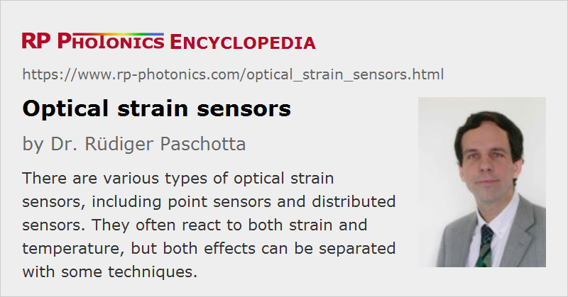

Optical Strain Sensors
Definition: sensors for mechanical strain based on optical technology, e.g. with fiber Bragg gratings
More general terms: optical sensors
German: optische Dehnungssensoren
Categories: fiber optics and waveguides, photonic devices
How to cite the article; suggest additional literature
Author: Dr. Rüdiger Paschotta
Optical strain sensors (or strain gauges) are sensors for compressive and/or tensile mechanical strain (deformation) which are based on optical technology – in most cases, on fiber optics. They can be based on different operation principles as explained in the following.
Note that mechanical strain results from mechanical forces. Therefore, strain sensing can also give information on mechanical forces or pressure.
There are alternative techniques, for example mechanical and electronic strain sensors. However, optical strain sensors can offer important advantages. For example, they can be operated a very wide temperature ranges, are insensitive to electromagnetic interference, and they do not require electrical cables (which is important for some high-voltage applications, where insulating materials need to be used). They are also suitable for dynamic measurements with high bandwidth. See below the paragraph on applications of optical strain sensors.
Operation Principles of Optical Strain Sensors
Point Sensors Based on Fiber Bragg Gratings
Many fiber-optic sensors for measuring strain are based on fiber Bragg gratings (FBGs). The operation principal is essentially based on the fact that strain applied to such a grating affects the grating period and thus the Bragg wavelength, i.e., the wavelength of peak reflectivity. The change of Bragg wavelength caused by changes of the strain ε and a temperature change ΔT is [2]:

Besides the purely geometric effect of strain (the elongation of the sensor, increasing the grating period), there is an effect due to a change of refractive index, which depends on the Pockels coefficients of the stress-optic tensor and the Poisson ratio ν. Essentially, the strain reduces the refractive index, and that somewhat reduces the effect of the increased grating period. For silica fibers, that reduction amounts to ≈22%.
An optoelectronic interrogator is used, which sends light to the grating sensor and analyzes the reflected light in order to determine the amount of strain. An external-cavity diode laser is suitable as a light source, for example.
For measuring the strain of a mechanical component, e.g. in a building, one needs to attach an FBG-based sensor to the component such that it is exposed to the same amount of strain. Some surface strain sensors are glued to flat or somewhat bent surfaces. In other cases, one uses other methods of attaching a sensor, for example spot welding, screwing or by embedding parts of a sensor in a concrete structure.
A challenge is that the Bragg wavelength of such a grating is also sensitive to temperature changes. For silica fibers, a temperature changed by 1 K corresponds roughly to a change of strain by 10 με. There are different methods for temperature compensation:
- One can use a second grating which is exposed to the same temperature but not to the mechanical strain.
- In some cases, one can apply an alternative technique with a push-pull configuration, where one grating is compressed when the other one is stretched. The difference between the two Bragg wavelengths then reacts to the strain but not to the temperature.
- One may measure the temperature with an additional temperature sensor and correct the strain measurements, using a known temperature coefficient of the grating.
- One may use two very different interrogation wavelengths (e.g. in the 0.8-μm and 1.5-μm region), leading to different ratios of strain and temperature responses.
On the other hand, the encoding of strain via an optical wavelength makes such sensors insensitive to other parameters such as losses of optical power along the fiber or the output power of the interrogator.
For some applications, both the strain and the temperature are of interest as measured quantities.
The resolution of an FBG-based strain sensor can be better than 1 με (i.e., relative length changes less than 10−6), and the accuracy may not be much lower. One may, for example, measure the thermal expansion caused by temperature changes of the order of 1 K or less. At the same time, the allowed measurement range can be ±20.000 με = ±2%. The dynamic range can thus be more than 40 dB.
For dynamic strain sensing with high bandwidth (e.g. for investigating acoustic phenomena), one may use a faster detection scheme, e.g. with an unbalanced Mach–Zehnder fiber interferometer, which converts wavelength changes into changes of optical power. Sensitivities substantially better than 1 nε in a 1-Hz bandwidth are achievable.
Quasi-distributed Sensors
A very attractive feature of the FBG-based sensor technology is that one can make quasi-distributed sensors with many such gratings in a long optical fiber, and use a single interrogator which can address all the different gratings with some kind of multiplexing. Signals from different gratings can be distinguished in different ways:
- The interrogator may send out light pulses (e.g. with nanosecond or picosecond duration) and monitor the arrival times of signals (time division multiplexing, TDM), which are different for the gratings due to the propagation time delays in the fibers between them.
- Alternatively, different gratings can have different Bragg wavelengths, so that each grating can be addressed by tuning the interrogation laser to its wavelength (wavelength division multiplexing, WDM). Instead of a laser, one may also use a broadband light source (for example a superluminescent diode) in combination with some kind of spectrometer, e.g. with a tunable Fabry–Pérot filter or a device based on a diffraction grating and a CCD sensor array.
One can also combine both techniques to realize WDM/TDM systems containing more point sensors – possibly more than 100.
Compared with using many independent sensors, the cost of such multi-point sensors can be much lower, because the installation of sensors and cables is simplified and a single interrogator can be used.
Interferometric Fiber Bragg Grating Sensors
In some cases, one uses a pair of Bragg gratings forming Fabry–Pérot interferometers, where one measures the strain in the fiber between the gratings via shifts of resonance frequencies. One may again use multiple sensors of that type in one fiber, when using gratings with different Bragg wavelengths. Alternatively, one may measure the average strain in a long piece of fiber.
Sensors Based on Micro-Fabry–Pérots
One can construct small Fabry–Pérot interferometers, where the small mirror distance (e.g. 50 μm) is affected by the strain to be measured. Therefore, the peak transmission wavelength will indicate the applied strain. Instead of the transmission, one may monitor the drop of reflectivity in resonance. The probe light end the reflected light can be sent through a single-mode fiber for highest convenience. As the fiber is only used for transporting the light, but not for the actual sensor, this technology is called extrinsic fiber sensor – in contrast to intrinsic sensors where the fiber itself acts as a sensor.
Micro-Fabry–Pérots can be produced in different ways, e.g. by maintaining an air gap between two fiber ends with some mechanical part (e.g. a micro-tube), or by using two fusion splices which are made reflective e.g. by applying dielectric coatings to the fiber ends.
Micro-Fabry–Pérot sensors can be made to operate at even higher temperatures than possible for FBG-based sensors, where annealing of the grating may occur. They can also offer very high strain resolution. On the other hand, it is not easily possible to use multiple sensors of that type in a single optical fiber.
Distributed Strain Sensors Based on Rayleigh Scattering
Distributed fiber-optic strain sensors can be realized with ordinary single-mode fibers, not containing any special structures such as fiber Bragg gratings. In many cases, one uses telecom fibers, operated in the 1.5-μm spectral region.
One possibility is to exploit Rayleigh scattering in the fiber. This is linear scattering due to microscopic variations in the fiber, mostly fluctuations of the refractive index. Compared with other techniques which employ nonlinear scattering (see below), one obtains stronger signals and can achieve a high spatial resolution (e.g. a few millimeters).
The back-scattered light can be analyzed with interferometric techniques. Essentially, one superimposes reflected light from the fiber with other light which is derived from the sent-out light. If reflections would occur only at a particular location in the fiber, the interferometer output would be approximately periodically varying with the optical frequency of the probe light. The speed of that oscillation depends on the location of the reflection. By applying a Fourier transform, one can decompose the interferometer signal into contributions from reflections at different locations. This can also be done with reflections based on a Rayleigh scattering at a randomly distributed locations. When the fiber under test is strained, the obtained signal pattern moves, which can be detected with suitable software.
That technique is suitable particularly for monitoring strain with high spatial resolution but only over limited lengths, e.g. a few dozens of meters.
Distributed Strain Sensors Based on Brillouin Scattering
For strain sensing in longer fibers, one usually uses techniques based on spontaneous or stimulated Brillouin scattering. For example, picosecond light pulse are sent into the fiber from one direction, and quite weak reflected components due to spontaneous Brillouin scattering are analyzed by optical heterodyne detection. The Brillouin frequency shift depends on the strain and temperature, while the spatial resolution can be obtained via the time delays.
Higher sensitivities can be achieved with techniques based on stimulated Brillouin scattering, called Brillouin optical time delay analysis (BOTDA). Here, an additional weak continuous-wave probe beam is used, which is propagating in the opposite direction to the picosecond pulses. Its optical frequency is chosen somewhat below the frequency of the pulses. The probe beam is then amplified at locations where the optical frequency difference between the pulses and the probe beam coincides with the local Brillouin shift (depending on strain and temperature). (Alternatively, one may obtain nonlinear losses for the probe beam when its frequency is higher than the frequency of the pulses.) Such measurements are performed with a variable optical frequency difference, and by combining those data one can effectively obtain a map of the Brillouin frequency vs. position.
The spatial resolution of such techniques is not as high as when using Rayleigh scattering. On the other hand, one can use them in conjunction with much longer fibers – often with lengths of more than 10 kilometers. They are thus particularly suitable for applications like the monitoring of pipelines, for example.
One again requires techniques for separating the influences of strain and temperature. Similar ideas can be applied as discussed above in the context of fiber grating sensors; for example, one may use two fibers, both exposed to the same temperatures, while one fiber also senses the strain and the other one is kept loose.
Applications of Optical Strain Sensors
A typical application of optical strain sensors is the monitoring of technical infrastructure such as bridges, tunnels, mines, buildings, oil and gas pipelines, power transmission lines, industrial processing plants, aircraft and blades of wind energy converters. Structural health monitoring can contribute to the safety and may make conventional methods of monitoring obsolete, thus saving cost. The ability of distributed sensing with a long optical fiber is also often of high importance. Sometimes, one profits from the simultaneous measurement of temperatures.
Strain sensors can also be very useful during the development of technology, e.g. in fatigue tests where parts are exposed to a high level of strain under controlled conditions. Such tests can be essential for guaranteeing reliability under normal operation conditions.
Suppliers
The RP Photonics Buyer's Guide contains 8 suppliers for optical strain sensors. Among them:
Questions and Comments from Users
Here you can submit questions and comments. As far as they get accepted by the author, they will appear above this paragraph together with the author’s answer. The author will decide on acceptance based on certain criteria. Essentially, the issue must be of sufficiently broad interest.
Please do not enter personal data here; we would otherwise delete it soon. (See also our privacy declaration.) If you wish to receive personal feedback or consultancy from the author, please contact him e.g. via e-mail.
By submitting the information, you give your consent to the potential publication of your inputs on our website according to our rules. (If you later retract your consent, we will delete those inputs.) As your inputs are first reviewed by the author, they may be published with some delay.
Bibliography
| [1] | A. D. Kersey, “A review on recent developments in fiber optic sensor technology”, Opt. Fiber Technol. 2, 291 (1996), doi:10.1006/ofte.1996.0036 |
| [2] | A. D. Kersey et al., “Fiber grating sensors”, IEEE J. Lightwave Technol. 15 (8), 1442 (1997), doi:10.1109/50.618377 |
| [3] | Y. J. Rao, “Recent progress in applications of in-fibre Bragg grating sensors”, Optics and Lasers in Engineering 31, 297 (1999), doi:10.1016/S0143-8166(99)00025-1 |
| [4] | B. Lee, “Review of the present status of optical fiber sensors”, Opt. Fiber Technol. 9 (2), 57 (2003), doi:10.1016/S1068-5200(02)00527-8 |
| [5] | F. M. Cox et al., “Opening up optical fibres”, Opt. Express 15 (19), 11843 (2007), doi:10.1364/OE.15.011843 |
| [6] | O. Franzão et al., “Optical sensing with photonic crystal fibers”, Laser & Photon. Rev. 2 (6), 449 (2008), doi:10.1002/lpor.200810034 |
| [7] | J. Urricelqui, M. Sagues and A. Loayssa, “Brillouin optical time-domain analysis sensor assisted by Brillouin distributed amplification of pump pulses”, Opt. Express 23 (23), 30448 (2015), doi:10.1364/OE.23.030448 |
See also: fiber Bragg gratings, fiber-optic sensors, optical temperature sensors
and other articles in the categories fiber optics and waveguides, photonic devices
|  |
If you like this page, please share the link with your friends and colleagues, e.g. via social media:
These sharing buttons are implemented in a privacy-friendly way!